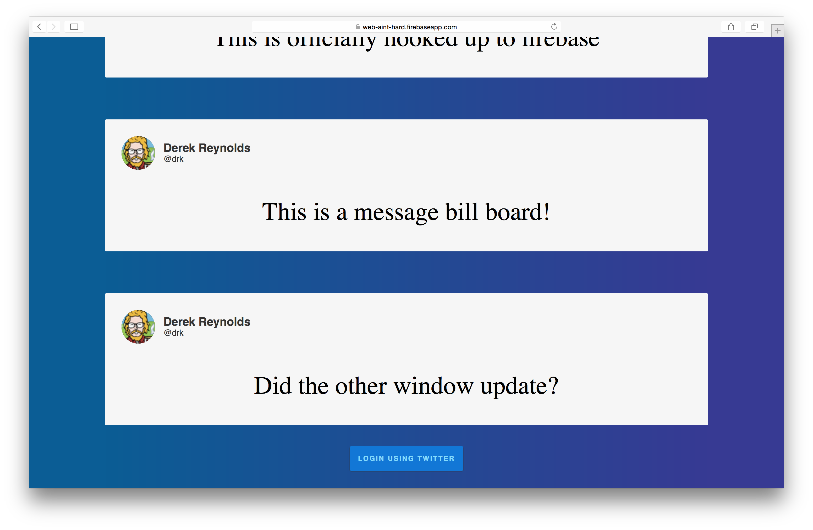

the web aint hard
@meanjim & @drk
frontend
product
prototypes
internal tooling
legacy codebase
messy codebase
why does this happen?
assumptions & abstractions
product changes so much
code changes so much
how? #existentialcrisis
simple product/designs
shortest path to solution
simple code base
less code
less code
* that you author
less code === less bugs
less code === fewer concepts
websites
html, css, js
webapps
admittedly more complex
servers
databases
REST API
this game aint new
tips
tricks
tools
context
realtime
realtime bill board
realtime bill board twitter authenticated
realtime bill board twitter authenticated sample prototype for learning

RiotJS
Webpack
Firebase
Travis-CI
derekr/the-web-aint-hard-hack-mit-2015
Firebase
realtime data store
auth
hosting
RiotJS
10x smaller, just 12kbs
Custom Tags, Event Emitter, Router, Virtual Dom
most minimalistic API for the job
Webpack
bundles dependencies
returns static assets
just felt like it
/dist
/dist
index.html
app.css
app.js
/dist
index.html
app.css
app.js
/dist
index.html
app.css
app.js
continuous integration
manual deployment is painful
language: node_js
node_js:
- "0.12"
after_success:
- firebase deploy
merge master
travis ok?
deploy to firebase
enjoy life
/dist
index.html
app.css
app.js
mentoring
thank you